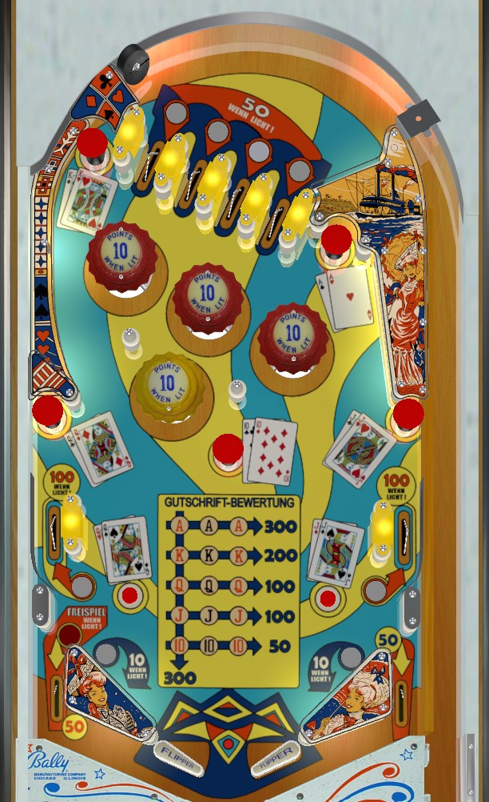

Collect playing cards from mushroom bumpers- Ace in the upper right, King in upper left, Queen in lower left, Jack in lower right, and 10 in the center. Making any 3 of a kind, or making a royal flush with one of each, scores points and resets the collected cards. Mastering the ricochet shot from the left flipper into the upper right mushroom bumper for Aces gives a relatively easy 300 points. Making a royal flush also lights the left out lane for a special.
The 3x5 array of inserts in the center of the table shows the current collection of playing cards. Aces are earned at the upper right mushroom bumper, which requires a ricochet shot; Kings require a left-orbit-ish shot to the upper left mushroom bumper; Queens need the lower left mushroom bumper or rollover button; Jacks need the lower right mushroom bumper or rollover button; 10s are at the center mushroom bumper. Any feature that awards a playing card gives 10 points. Collecting 3 of a kind of any one card scores bonus points and resets the collected cards: 50 points for three 10s, 100 points for three Jacks or Queens, 200 points for three Kings, and 300 points for three Aces. Collecting a royal flush by getting one of each card before getting three of any single card also scores 300 points and resets the collected cards, and lights the left out lane for a special as well.
Many things in Aces High are intermittently lit.
The top lanes give 10 points when not lit or 50 points when lit; every 10-point switch registered will alternate whether lanes 1+3 are lit or lanes 2+4 are lit. These two states strictly alternate.
Other sometimes-lit features, including the three red pop bumpers, the two side lanes, and the slingshots, are lit a variable percentage of the time thanks to a dynamic difficulty system present in many Bally games from the mid-1960s. A counter in the game counts up several steps whenever a playfield special or replay score is achieved, and counts down one step for each game played. The higher the counter is, the less frequently features in the game are lit, making the game harder by lowering average scores. The red pop bumpers score 1 point, or 10 points when lit; the side lanes score 10 points, or 100 points when lit; and the slingshots score 1 point, or 10 points when lit. Every 10-point switch changes the exact selection of lit features, but they do not alternate or rotate in a regular pattern, and are governed by the dynamic difficulty system instead.
There are no in lanes. This game uses "mini" 2-inch flippers. The flippers back up directly to the slingshots. The slings are at a considerably more shallow angle than most games. Slingshots are worth 1 point or 10 points when lit as described above. Out lanes score 50 points. The left out lane also scores a special if a royal flush was scored on the current ball in play.
There is no end of ball bonus. Tilt penalty is ball in play only. There is no way to earn an extra ball. To my knowledge, specials can only be worth free games, and cannot be set to have a point value.